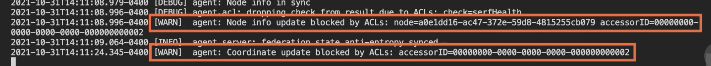
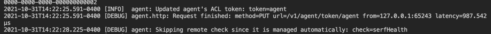
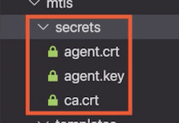
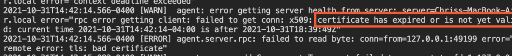
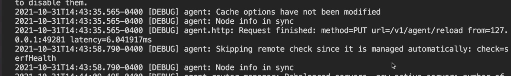

L4 Integrating Vault with Consul
Consul
- Service registration
- Backend storage
- Access tokens
- TLS certificates
Consul Service Registration
HashiCorp Consul
Service mesh technology
- Became prevalent with microservices
Separate services
- More flexibility and speed
- More operational cost
Consul helps solve microservice ops issues
- Discovery
- Configuration
- Network segmentation
Discovery
Application is spread across runtimes
Previous interface
- Classes with public methods
New interface
- Dedicated API on the network
Consul provides a service registry
Register Vault for centralized secrets
Demo: Consul Service Registration
vault-config.hcl
service_registration "consul" {
address = "localhost:8500"
# check_timeout = 1m
# scheme = "https"
# service = "carved-rock-vault"
}
$ consul agent -dev
$ curl -i http://localhost:8500/v1/catalog/service/vault
$ dig @localhost -p 8600 vault.service.consul
...
;; ANSWER SECTION:
vault.service.consul. 0 IN A 127.0.0.1
...
Consul Key-Value Store
With an application spread over many services, configuring them all to work together becomes a challenge that scales in difficulty as the number of services grows, especially if you want to have all services configured with some common setting very quickly.
Consul provides a key‑value store that services can query for their configuration providing a unified configuration experience and a single place for operators to make changes.
Configuration
Configuration
Especially low-latency global configuration
Consul key-value (KV) store for config
- Unified config & single source of truth
Consul KV Store
- Simple in features
- Robust in replication
- Every value replicated in servers
- In-memory for quick access
- Consul KV is an official Vault backend
- More clients & secrets means more RAM
- Vault persistent data is encrypted
- Implies Vault service registration
Demo: Consul Key-Value Store
storage-backend\vault-config.hcl
storage "consul" {
address = "localhost:8500"
}
vault server -dev -config vault-config.hcl
$ consul kv get -keys vault/
vault/core/
vault/logical/
vault/sys/
$ consul kv get -keys vault/core/
vault/core/audit
vault/core/auth
vault/core/cluster/
vault/core/hsm/
vault/core/keyring
vault/core/leader/
vault/core/local-audit
vault/core/local-auth
vault/core/local-mounts
vault/core/lock
vault/core/master
vault/core/mounts
vault/core/seal-config
vault/core/shamir-kek
vault/core/wrapping/
$ consul kv get -base64 vault/core/master
AAAAAOLErU6VJ109wwhc+qBrwVbegcFfWL+adglLU®/sqFvww60Kca/HODrLWYbaSS]mzUgHJueOfAzz7rrLkYARKN88quoKJ3GJLIcVEoGrm/GTtv0X7SV+4Rsx0krGPH9Bg4RekLad(xY1oxkBuLDyC71+00aPamW1UPz9D5EL5VWq6Gf2obx2kDCTdSPismry
consul kv put vault/core/master whoops!
Success! Data written to: vault/core/master
$ consul kv get vault/core/master
whoops!
Securing the Consul API
- Not secure by default
- Vault stores encrypted data…
- …but we should still secure endpoints
- Built-in ACL system for the API
- Authentication via tokens that Vault can make
- Process
- Bootstrap the ACL system
- Provide a management token to Vault
- Create a role, bound to Consul policies
Demo: Consul API ACL System
consul-tokens\consul-config.hcl
acl = {
enabled = true
default_policy = "deny"
#enable_token_persistence = true
}
consul agent -dev -config-file=consul-config.hcl -node=server-0

consul acl bootstrap
AccessorID: 87d824c-0763-f8bc-e476-7ae4cffb77de
SecretID: 44074773-6988-492c-09a5-97880c11de86
Description: Bootstrap Token (Global Management)
Local: false
Create Time: 2021-10-31 14:13:14. 191713 -9400 EDT
Policies: 00000000-0000-0000-0000-000000000001 - global-management
export CONSUL_BOOTSTRAP_TOKEN=44074773-6988-492c-09a5-97880c11de86
$ vault secrets enable consul
Success! Enabled the consul secrets engine at: consul/
$ vault write consul/config/access
address=http://localhost:8500 \
token=$CONSUL_BOOTSTRAP_TOKEN
Success! Data written to: consul/config/access
consul-server-policy.hcl
node_prefix "server-" {
policy = "write"
}
node_prefix "" {
policy = "read"
}
service_prefix "" {
policy = "read"
}
acl = "read"
CONSUL_HTTP_TOKEN=$CONSUL_BOOTSTRAP_TOKEN \
consul acl policy create \
-name consul-server\
-rules @consul-server-policy.hcl
ID: 1b424d83-3cb9-44a0-b096-4152c363a883
Name: consul-server
Description:
Datacenters:
Rules:
node_prefix "server-" {
policy = "write"
}
node_prefix "" {
policy = "read"
}
service_prefix "" {
policy = "read"
}
acl = "read"
vault write consul/roles/consul-server \
policies=consul-server
Success! Data written to: consul/roles/consul-server
vault read consul/creds/consul-server
Key Value
--- ----
lease_id consul/creds/consul-server/5fEcHIb8ynbOdqdC099NZc1N
lease_duration 768h
lease_renewable true
accessor fc68c6c2-7499-09e-8839-485de1e39457
local false
token 97ea1d39-911b-485d-feb-1ea8ba8a17f1
export CONSUL SERVER TOKEN=97ea1d39-911b-485d-cfeb-1ea8ba8a17f1
export CONSUL SERVER ACCESSOR=fc68c6c2-7499-c09e-8839-485de1e39457
consul-tokens CONSUL_HTTP_TOKEN=$CONSUL_SERVER_TOKEN \
consul acl token read -id CONSUL_SERVER_ACCESSOR
AccessorID: fc68c6c2-7499-c09e-8839-485de1e39457
SecretID: <hidden>
Description: Vault consul-server root 1635704380586423000
Local: false
Create Time: 2021-10-31 14:19:40.588897 -0400 EDT
Policies:
1b424d83-3cb9-44a0-b096-4152c363a883-consul-server
CONSUL_HTTP_TOKEN=$CONSUL_BOOTSTRAP_TOKEN \
consul acl set-agent-token agent $CONSUL_SERVER_TOKEN
ACL token "agent" set successfully

Consul Connect mTLS
Network Segmentation
Monolithic app
Load balancer -> app -> database
Microservices
- Vastly increased number of connections
- Each service needs at least one other
- Restrict services to others they need
- Achieving with IPs is very hard
Consul Connect, a higher-level mechanism
Consul Connect
Services communicate through
- Consul SDK in the service code
- Sidecar proxy
Secured with mTLS
- TLS unaware apps are encrypted
- Little to no code changes for proxy
- Both services know the ID of the other
Consul will allow or deny using
- ID from TLS certificate
- “Intentions"
Demo: Consul Connect mTLS
How to use Vault and consul‑template to provision and rotate TLS certificates that secure service‑to‑service communication
Already set up two PKI engines in Vault
vault write pki_int/roles/consul-dc1 \
allowed_domains="dc1.consul"
allow_subdomains=true
generate_lease=true \
max_ttl="720h"
Success! Data written to: pkiint/roles/consul-dc1
One is the root CA and another as the intermediate CA.
agent-certificate.template
{{ with secret "pki_int/issue/consul-dc1" "common_name=server.dc1.consul" "ttl=5m" "alt_names=localhost" "ip_sans=127.0.0.1"}}
{{ .Data.certificate }}
{{ end }}
agent-key.template
{{ with secret "pki_int/issue/consul-dc1" "common_name=server.dc1.consul" "ttl=5m" "alt_names=localhost" "ip_sans=127.0.0.1"}}
{{ .Data.private_key }}
{{ end }}
ca-certificate.template
{{ with secret "pki_int/issue/consul-dc1" "common_name=server.dc1.consul" "ttl=5m" "alt_names=localhost" "ip_sans=127.0.0.1"}}
{{ .Data.issuing_ca }}
{{ end }}
onsul-template-config.hcl
vault {
address = "http://localhost:8200"
# You can use the Vault agent to manage the required Vault token
# vault_agent_token_file = ""
renew_token=false
}
template {
source = "templates/ca-certificate.template"
destination = "secrets/ca.crt"
command = "date && consul reload"
}
template {
source = "templates/agent-certificate.template"
destination = "secrets/agent.crt"
command = "date && consul reload"
}
template {
source = "templates/agent-key.template"
destination = "secrets/agent.key"
command = "date && consul reload"
}
consul-template -config consul-template-config.hcl
Sun Oct 31 14:33:08 EDT 2021
Error reloading: Put
"http: //127.0.0.1:8500/v1/agent/reload": dial tcp 127.0.0.1:8500: connect: connection refused
2021-10-3114:33:08.321-0400 [ERR] (cli) 1 error occurred:
* failed to execute command "date && consul reload" from
"templates/ca-certificate. template" =>
"secrets/ca.crt": child: command exited with a non-zero exit status:
sh -c date && consul reload
This is assumed to be a failure. Please ensure the command
exits with a zero exit status.
consul‑template will quit because the consul reload command failed, but it did manage to pull the secrets from Vault.

consul-config.hcl
verify_incoming = true
verify_outgoing = true
verify_server_hostname = true
ca_file = "secrets/ca.crt"
cert_file = "secrets/agent.crt"
key_file = "secrets/agent.key"
auto_encrypt {
allow_tls = true
}
consul agent -dev -config-file consul-config.hcl

$ consul-template -config consul-template-config.hcl
Sun Oct 31 14:43:35 EDT 2021
Configuration reload triggered

Module Review
- HashiCorp Consul
- Register Vault as a service
- Use Consul KV for Vault storage
- Secure the API with token access
- Produce certificates for service mTLS